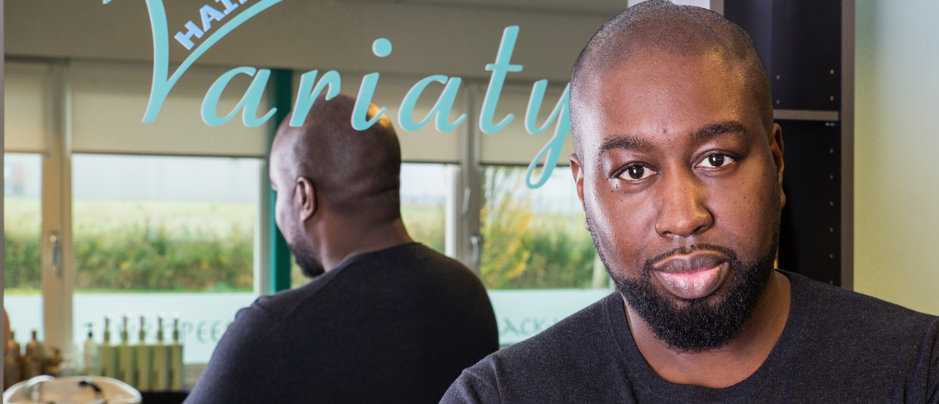

Traditional methods of smile enhancement, like veneers, often have required painful hours in the dentist’s chair. “I have always been worried that we are doing damage, especially on young people, by taking away too much tooth structure,” says a North Carolina dentist in a posting on www.dentaltown.com, a popular dental Web site and forum. Now, with one of the newest developments in cosmetic dentistry, Lumineers by Cerinate, you can dramatically improve your smile immediately and painlessly.
Lumineers leave original teeth intact. They are also clinically proven to last up to 20 years. So when it comes to smile makeovers today, some 7,500 dentists are choosing Lumineers. These contact lens-thin smile enhancers are a great alternative to orthodontics and can be placed over old crowns and bridges. Dental professionals are so impressed with new developments like Lumineers that they are placing them on their own friends’ and loved ones’ teeth.
Traditional methods of smile enhancement, like veneers, often have required painful hours in the dentist’s chair. “I have always been worried that we are doing damage, especially on young people, by taking away too much tooth structure,” says a North Carolina dentist in a posting on www.dentaltown.com, a popular dental Web site and forum. Now, with one of the newest developments in cosmetic dentistry, Lumineers by Cerinate, you can dramatically improve your smile immediately and painlessly.
Direct een afspraak maken!Traditional methods of smile enhancement, like veneers, often have required painful hours in the dentist’s chair. “I have always been worried that we are doing damage, especially on young people, by taking away too much tooth structure,” says a North Carolina dentist in a posting on www.dentaltown.com, a popular dental Web site and forum. Now, with one of the newest developments in cosmetic dentistry, Lumineers by Cerinate, you can dramatically improve your smile immediately and painlessly.
Traditional methods of smile enhancement, like veneers, often have required painful hours in the dentist’s chair. “I have always been worried that we are doing damage, especially on young people, by taking away too much tooth structure,”